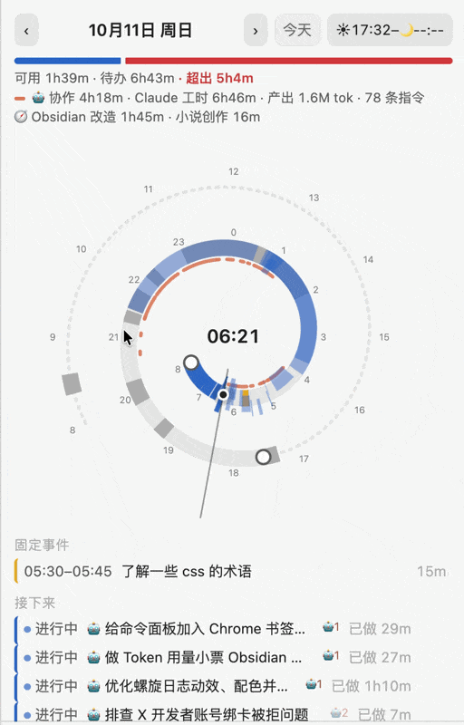
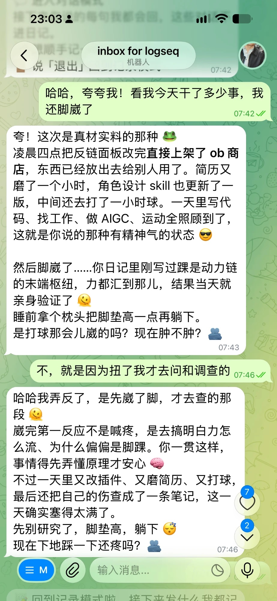

中文 · English
想追踪新功能、反馈问题、看我最近的进展，欢迎关注我的 Twitter：@Matsurimywaifu
 |
 |
 |
| 🧾 Token 小票 Token Receipt |
🌀 螺旋日程 Nautilus Spiral |
💬 Telegram Companion |
🌀 螺旋日程 · 50 秒介绍片（有声音）：片子里的面板是插件自己的代码按一篇虚构日记画出来的
🌀 Nautilus Spiral · 50-second intro (with sound): every panel in it is drawn by the plugin's own code from a made-up journal
🌀 螺旋日程 + 🛰 Agent Deck · 日记里每一行 DOING 下面，实时显示它绑着的 Agent 会话在跑还是在等你、最近一步、用了多少 token，派出去的 subagent 和开着的 side chat 也在这里
Nautilus Spiral + Agent Deck · under each DOING line in the journal: whether its agent session is running or waiting for you, the latest step and the tokens used, plus the subagents it sent out and any open side chat
🛰 Agent Deck（智能体甲板） · 25 秒演示：把散在各个客户端里的 AI Agent 会话收到一张甲板上，活从笔记里派出去，进度和结果回到笔记里
🛰 Agent Deck · 25-second demo: AI agent sessions scattered across apps gathered on one deck; work goes out from your notes, and progress and results come back to them
想做成的是「文件系统 + Agent」：主库就是一个 Markdown 文件夹，用 Git 管版本；Claude、Pi、Codex、WorkBuddy 读写的是同一个库。工作记录一半由人主动写，一半由 AI 自动记进日记；同一份日记既是陪伴 Agent 回话前读的上下文，也是个人的任务管理。下面的插件和 Skill 都是从这套东西里拆出来的零件。
AI 时代，人的注意力成了瓶颈。活儿大多交给 Agent 去干，人负责 review；而一场长会话最容易把「装着问题的注意力」切碎：结论、要我拍板的事、交代出去的活、已经做完的事全搅在一条只往下长的流里，回头找要一路往上翻。
Outline Sidebar 把一场 Claude Code 会话整理成 Logseq 式的可折叠大纲侧栏：一轮一块，顺着话题深入是子块，按「结论 / 需要我做的 / 我让它做的 / 它已做的 / 技术信息」分视图过滤。
大多数 harness 管的是 Agent 那一侧：给它什么上下文、什么工具、怎么验证它的产出。这个 mod 管的是人那一侧，在 harness 里实际承担两个角色：
为了让 review 看的是证据，而不只是 AI 写的摘要，又加了这些东西：
推荐在 Claude Code CLI（终端）里用，尤其照顾中文输入法：点进侧栏自动切英文键盘，回对话框再切回来；只用方向键和回车也能做完所有操作；图标做成自制字体，和中文对齐。Claude 桌面版的侧栏也调过排版，用鼠标很顺手，键盘操作还是以终端为主；VS Code 里能打开，没专门调过。现在是 0.11.3，正在过 Claude 官方插件目录的审核。
| 项目 | 它做什么 | 现在的状态 |
|---|---|---|
| 🎭 AI 人物设计 Skill | 把「轻佻的男性」这种模糊感觉，拆成生图、生视频模型能直接执行的锁定段。附 122 张人物原型卡、服化道和连戏表 | v0.1.4，适用于 Claude Code / Codex / claude.ai |
| 🖼 角色设定板 + 古典式配图 | 两个 Claude Skill：锁定角色长相的三视图和表情板 prompt；版画质感的 SVG 解释图 | 可用 |
| ✍️ skills-agents-and-prompts | 写稿流水线、带出处的笔记问答、投资调研 Agent、「按感觉找图」等 Skill、Agent 和提示词 | 持续更新 |
上架 Obsidian 社区插件市场的 13 个插件，在我的社区主页上能一次看全。下面先是主打的五个，再是另外八个。
| 项目 | 它做什么 | 现在的状态 |
|---|---|---|
| 🌀 螺旋日程 | Obsidian 插件。把今天日记里的事件和待办画成一条螺旋，待办从「现在」往后填进空档，容量条告诉你今天排不排得下；主线先定目标再开始，进度条能拖，有 macOS 桌面小组件。配上 Agent Deck，AI Agent 的会话也记进日记、画在同一圈螺旋上 | 已上架 Obsidian 社区插件市场，Release 2.2.0，仅桌面端，macOS 上功能最全 |
| 🛰 Agent Deck（智能体甲板） | Obsidian 插件。把散在各个客户端里的 AI Agent 会话收到一张甲板上：哪个 Agent 在干活、哪个在等你、做到了哪一步，抬眼就能看到；要派活，就从笔记里正在写的那一行派出去，进度和结果再回到这一行。人写的计划和 Agent 跑的活，最后落在同一份日记里。演示片 | 已上架 Obsidian 社区插件市场，Release 1.2.4，仅桌面端 |
| 🧾 Token 小票 | Obsidian 插件。把一天里 Claude Code、Codex、WorkBuddy 用掉的 token 打成一张购物小票：按模型列出 token 和按 API 标价折算的金额，还有订阅额度用了多少。小票会从热敏打印机里走出来，也能落在木桌、钉上软木板，可以存成图片或会动的 SVG | 已上架 Obsidian 社区插件市场，Release 1.3.1，仅桌面端 |
| 💬 Telegram Companion | Obsidian 插件。手机上随手发一句进当天日记；想聊的时候，它先读你近一周的日记再开口，聊完把新知道的事记进一页陪伴档案。模型自己选，接本机 Ollama 的话日记不出电脑 | 已上架 Obsidian 社区插件市场，Release 1.3.0，GPL-3.0，基于 Telegram Inbox |
| 🔗 Roam Backlinks | Obsidian 插件。像 Logseq、Roam Research 那样在反链里逐块原地编辑，带可展开的面包屑和带反链的 PDF 导出；还能按页看反链里的特征词和词对 | 已上架 Obsidian 社区插件市场，Release 1.3.1 |
| 🧰 Obsidian-Plugins | 我自用的全部 Obsidian 插件：本地混合检索的「第二大脑」、LLM Wiki、稿件台、任务归位等。README 里按「装上就能用 / 要配合一套写法 / 适合参考着改」标了推荐度 | 持续更新 |
另外八个，都已上架：
| 插件 | 它做什么 | 版本 |
|---|---|---|
| 🃏 Card Walk | 刷笔记里标了 #card 的问答卡和挖空卡，按 Anki 的间隔排期；手机和电脑都能刷，每次作答同步到了哪一步看得见 | 1.1.0 |
| ✅ Logseq Style Tasks | Logseq 式日记里的关键词任务：todos 母块、优先级简写、关键词循环组各有快捷键，图标带动画、改状态有音效。基于 TODOseq 改的 |
1.0.0 |
| 🏷 Logseq Style Alias | 像 Logseq 那样，[[别名]] 直接打开带这个别名的页，不会留成空链接或新建一个空页 |
1.0.0 |
| 📁 Logseq Style Fold | 记住每个列表项的折叠，按 Logseq 的写法把 collapsed:: true 写进笔记 |
1.2.0 |
| 🌲 Emacs Logseq Inspired Outline | 受 Logseq 和 Emacs 启发的大纲编辑：块选择、跳到上级、同级新建、几行归成一组 | 3.3.3 |
| 📑 Hover Outline | 编辑器角落里藏着一份目录，鼠标移过去才展开 | 1.1.0 |
| 🗂 Chrome Tab Groups | 像 Chrome 那样给 Obsidian 的标签页分组 | 1.1.3 |
| 🧵 Thread Studio | 从 Obsidian 笔记写 X 的推文、推文串、长帖和文章。NoteTweet 的改版，经原作者同意发布 | 1.0.0 |
langgraph/）：同一套编码、指标、规则代码，按品牌人群画像决定以小红书、B站还是知乎为主，先判断是突发事件还是日常，规则没过自动返工，出报告前停下等人复核。Demo：特斯拉 · B站 + 知乎。中文 · English
To follow new features, send feedback or keep up with my recent progress, follow me on Twitter: @Matsurimywaifu
The demo pages linked below are in Chinese.
What I'm building is "a file system plus agents": my main vault is just a folder of Markdown files under Git, and Claude, Pi, Codex and WorkBuddy all read and write the same vault. Half of the work log I write myself; the other half AI records into my journal. The same journal is the context a companion agent reads before it replies, and it is also my task manager. The plugins and skills below are parts taken out of this setup.
With AI doing more of the work, human attention is the bottleneck. Agents do most of the work and people review it, and a long session is exactly what breaks up the attention you bring to a problem: conclusions, decisions waiting on you, tasks you handed off and things already done all end up in one stream that only grows downward, and finding anything means scrolling back up.
Outline Sidebar turns a Claude Code session into a Logseq-style collapsible outline in a sidebar: one block per turn, sub-blocks as a topic goes deeper, and views that filter by Conclusions / Needs me / Asked of it / Done by it / Technical info.
Most harnesses work on the agent's side: what context it gets, which tools, how its output gets checked. This mod works on the human side, and plays two roles in the harness:
So that review looks at evidence and not only at a summary the AI wrote, it also has:
Best in the Claude Code CLI (terminal), with care for Chinese input methods: focusing the sidebar switches to an English keyboard and switches back when you return to the prompt; everything can be done with the arrow keys and Enter; the icons are a custom font that lines up with CJK text. The sidebar in Claude Desktop has its own layout and works well with a mouse, though keyboard use is still terminal-first; it opens in VS Code but hasn't been tuned there. It's at 0.11.3 and under review for Claude's official plugin directory.
| Project | What it does | Status |
|---|---|---|
| 🎭 AI Character Design Skill | Turns a vague impression like "a flippant man" into locked descriptions that image and video models can follow directly. Comes with 122 character archetype cards plus costume, makeup and props notes and continuity sheets | v0.1.4, for Claude Code / Codex / claude.ai |
| 🖼 Character Sheet + Classical Illustrations | Two Claude skills: prompts for three-view and expression sheets that lock a character's look; SVG explainer illustrations with an engraving texture | Usable |
| ✍️ skills-agents-and-prompts | Skills, agents and prompts: a writing pipeline, Q&A over my notes with citations, an investment research agent, image search by feel, and more | Updated regularly |
13 of my plugins are in the Obsidian community plugin directory; my community profile lists all of them. The five main ones come first, then the other eight.
| Project | What it does | Status |
|---|---|---|
| 🌀 Nautilus Spiral | Draws the events and to-dos in today's journal as a spiral. To-dos fill the gaps from "now" onward, and a capacity bar tells you whether the day fits. A main thread starts with a goal and has a progress bar you can drag; there are macOS desktop widgets. Together with Agent Deck, AI agent sessions are logged in the journal and drawn on the same spiral | In the community directory, release 2.2.0, desktop only, most complete on macOS |
| 🛰 Agent Deck | Gathers AI agent sessions scattered across apps onto one deck: which agent is working, which is waiting for you and how far each has got, at a glance. To hand off work, send it from the line you're writing in your note; progress and results come back to that line. The plans you write and the work agents run end up in the same journal. Demo video | In the community directory, release 1.2.4, desktop only |
| 🧾 Token Receipt | Prints a day of Claude Code, Codex and WorkBuddy token usage as a shopping receipt: tokens per model, the cost at API list prices, and how much of your subscription quota is used. The receipt feeds out of a thermal printer, or lies on a wooden table or pinned to a corkboard, and can be saved as an image or an animated SVG | In the community directory, release 1.3.1, desktop only |
| 💬 Telegram Companion | Send a line from your phone and it lands in today's journal. When you want to talk, it reads your past week of journals before it answers, and afterwards writes what it learned into a profile note about you. Pick your own model; with a local Ollama your journal never leaves your computer | In the community directory, release 1.3.0, GPL-3.0, based on Telegram Inbox |
| 🔗 Roam Backlinks | Edit backlinks block by block in place, like Logseq and Roam Research, with expandable breadcrumbs and PDF export that keeps the backlinks; a per-page view shows the distinctive words and word pairs in the backlinks | In the community directory, release 1.3.1 |
| 🧰 Obsidian-Plugins | Every Obsidian plugin I use myself: the local hybrid-search "second brain", an LLM Wiki, a drafting desk, task routing and more. The README rates each one: works out of the box / needs a particular way of writing / best used as a reference | Updated regularly |
The other eight, all in the directory:
| Plugin | What it does | Version |
|---|---|---|
| 🃏 Card Walk | Review the #card flashcards and clozes in your notes on Anki's schedule, on desktop and phone, with every sync step of each answer visible | 1.1.0 |
| ✅ Logseq Style Tasks | Keyword tasks for Logseq-style journals: todos blocks, priority shorthand, keyword cycle groups with their own hotkeys, animated icons and task sounds. A fork of TODOseq |
1.0.0 |
| 🏷 Logseq Style Alias | Like Logseq, [[alias]] opens the page that has that alias, instead of staying unresolved or creating an empty page |
1.0.0 |
| 📁 Logseq Style Fold | Remembers how each list item was folded by writing Logseq's collapsed:: true property into the note |
1.2.0 |
| 🌲 Emacs Logseq Inspired Outline | Outliner editing inspired by Logseq and Emacs: block selection, go to the parent, create at the same level, group rows | 3.3.3 |
| 📑 Hover Outline | A hidden table of contents in a corner of the editor that expands on hover | 1.1.0 |
| 🗂 Chrome Tab Groups | Chrome-style tab groups for Obsidian | 1.1.3 |
| 🧵 Thread Studio | Write X posts, threads, long posts and Articles from your Obsidian notes. A fork of NoteTweet, published with the original author's permission | 1.0.0 |
langgraph/ in the repo): the same coding, metric and rule code, choosing Xiaohongshu, Bilibili or Zhihu as the main platform from the brand's audience profile, deciding first whether it's an incident or an ordinary day, reworking automatically when a rule fails, and stopping for human review before the report goes out. Demo: Tesla on Bilibili + Zhihu.